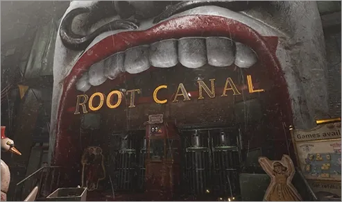
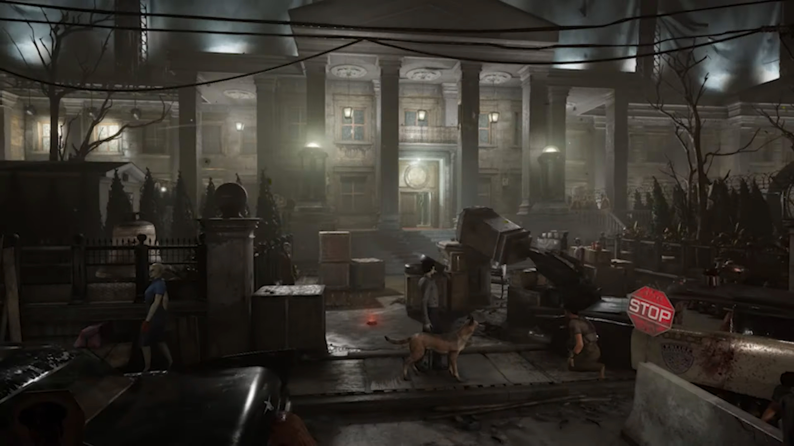
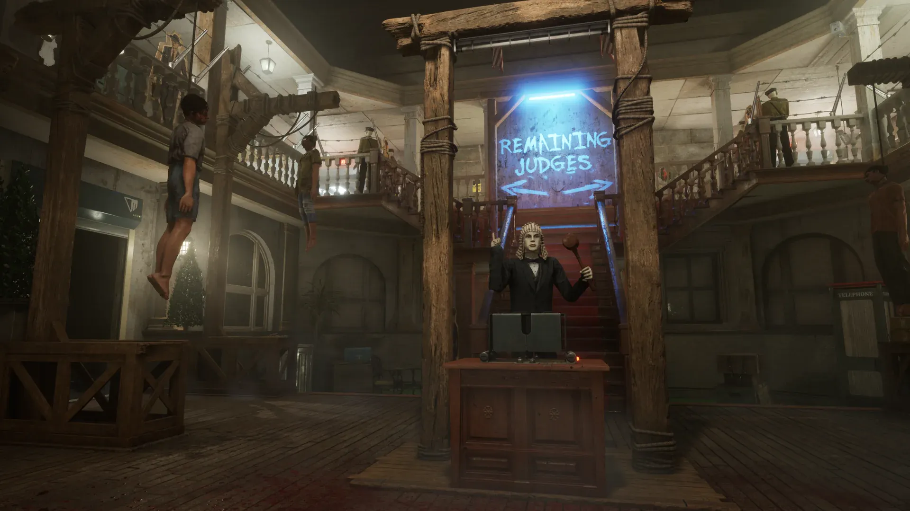
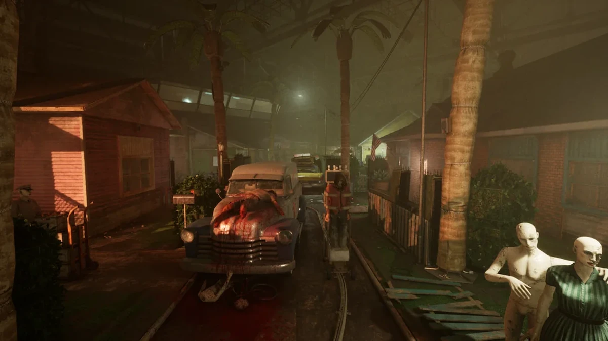
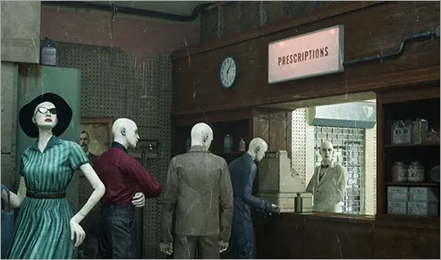
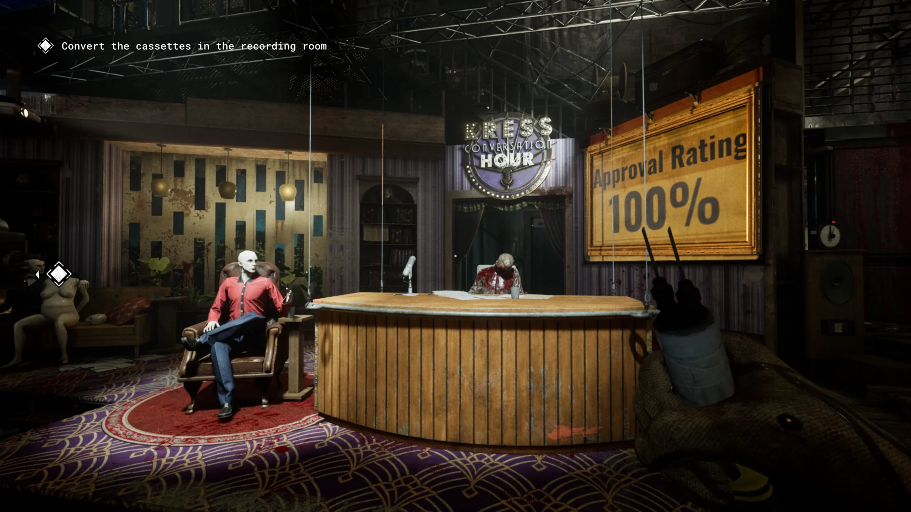
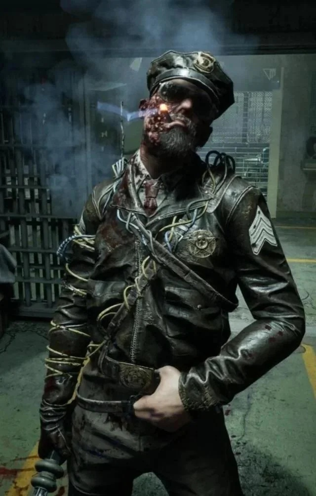
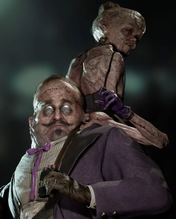

Leland Coyle
Police Station · Courthouse · Prison Farm
These environments are associated with Leland Coyle. The Guide contains walkthroughs for the Police Station, Courthouse, and Prison Farm activities.
Sinyala Facility Handbook
Browse the real environments represented in the handbook.










A territory reference for the Trial environments and the Prime Assets associated with them. Open the Guide for the detailed walkthroughs.

Police Station · Courthouse · Prison Farm
These environments are associated with Leland Coyle. The Guide contains walkthroughs for the Police Station, Courthouse, and Prison Farm activities.
Fun Park · Toy Factory
Fun Park and Toy Factory are separate Trial Environments associated with Mother Gooseberry.

Downtown · The Docks · The Suburbs
Franco's territory covers the Downtown, Docks, and Suburbs environments.

Shopping Mall · Television Studio
The Kress Twins are associated with the Shopping Mall and Television Studio environments.
The Resort
The Resort is Liliya Bogomolova's environment. The X Ray and Jammer Rigs can help identify her.
The Guide page contains the detailed Trial and MK Challenge walkthroughs currently included in the handbook.
JKnasty